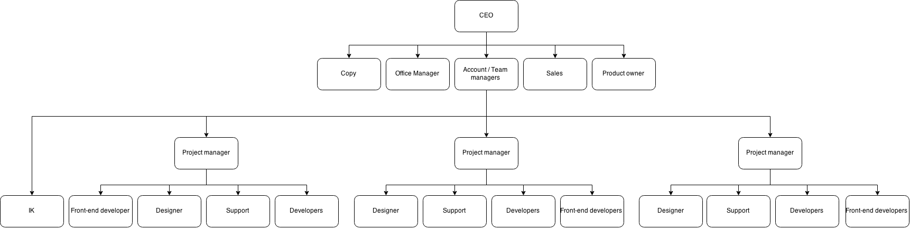

Digiti bvba |
Kennismaking met de onderneming
naam en juridische vorm
Digiti bvba
activiteiten en economische sector
het maken van website en webapplicaties in de IT-sector(Tertiaire sector)
openingsuren
9u-17u
aantal personeelsleden
25 werknemers
soort boekhouding, wie voert ze en met welk boekhoudpakket
dubbele boekhouding , gevoerd door extern bedrijf, met expert/m
specifieke milieuvoorwaarden waar de onderneming moet aan voldoen
Het bedrijf heeft geen specifieke milieuvoorwaarden waaraan het moet voldoen. Alleen de algemene :Vlarem II (hoofdstuk 4)
organogram
opstellen van het organogram

toelichten van de belangrijkste afdelingen binnen de onderneming
projectmanager: leidt haar team en de projecten die haar team heeft. Ze zorgt dat alles op tijd klaar is. Ze bespreekt ook het project met de klant om duidelijk te
designer: ontwerpt dingen grafisch zoals proof of concept, logo’s, nieuwsbriefvoorbeeld …
developer : schrijft de software van de applicaties.
support: help iedereen die hulp nodig heeft. Kent dus ook de basis van alles.
front-end developers: maken vooral websites en nieuwsbrieven. Bij nieuwsbrieven maken zijn van het voorbeeld html en css code zodat alles makkelijk kan aangepast worden.
situeren van de informaticadienst en jezelf erbij tekenen
Aangezien het hele bedrijf met informatica bezig is en ik ook voor veel verschillende mensen heb gewerkt is het heel lastig om mij in deze structuur te plaatsen. Ik hielp gewoon wanneer mij dat gevraagd werd.
bespreken van je eigen kantoor
Een grote open ruimte waar de meeste werken. Voor iedereen is er een grote tafel voorzien voor zijn PC. Zoals je in het organogram kan zien zit iedereen in groepen. Er is ook nog een ander kantoor waar een paar mensen aan een bepaald project werken(developers).
Marktomgeving van de onderneming
doelgroep van de onderneming
Mensen of bedrijven die website, app, logo of animatie nodig hebben, kleine KMO’s tot grote multinationals
belangrijkste klanten
Johnson en Johnson, Ravago, Vasco, Kbc, Holiday suites,...
hoe bereikt de onderneming haar doelgroep
Sales (Sven), afspraken maken met nieuwe klanten & het opvolgen huidige klanten.
Via de website komen ook nog enkele aanvragen binnen.
Via het maken van proof-of-concepts (bijvoorbeeld: De Lijn, SD Worx)
welke promotie of publiciteit wordt gevoerd
Website, waarvan er dit jaar een nieuwe gelanceerd wordt.
Sociale kanalen (Facebook, Twitter)
Events (netwerkevents, beurs, ...)
waarom koos de onderneming voor haar vestigingslocatie
Veel bedrijven in Gent (“Belgian Web Valley”) of andere steden.
Meer lokaal: om files, stadsdrukte & concurrentie te mijden.
Voornaamste klant: Janssen Pharmaceutica is gesitueerd in Beerse. Dus dichtbij.
Gelegen aan oprit en afrit autostrade dus heel gemakkelijk te bereiken.
Maar, Ze gaan binnen enkele maanden verhuizen naar Herentals (Frame 21).
de positieve en negatieve vestigingsfactoren van de locatie
- Huidige kantoor is te klein.
- Dat we niet in een grootstad gevestigd zijn.
+ Dicht bij Antwerpen en onze voornaamste klant.
+ Industriegebied met veel bedrijven rondom ons, in het nieuwe kantoor zitten meerdere bedrijven samen waardoor we nieuwe connecties kunnen leggen.
+ Dicht bij de autostrade.
+ Een groot gebouw, voor meerdere bedrijven. Dus gedeelde diensten.
welke inspanningen doet de onderneming om klanten, producten en of diensten, assortiment, vestigingsplaats, prijs, promotie, plaats en presentatie op mekaar af te stemmen
We trachten alle werkdocumenten, facturen, presentaties, … binnen onze huisstijlgids/branding op te maken.
Prijs wordt afgestemd aan de hand van prijzen van de concurrentie, deze worden gedeeltelijk, overkoepelend bepaald door Feweb. Promoties worden niet echt gedaan, prijzen worden soms afgestemd specifiek op de klant (naargelang de termijn van samenwerking).
Vestigingsplaats, wordt afgestemd op:deels op klanten (voornamelijk onze grootste, JNJ) en deels op potentiële nieuwe medewerkers.
Handelsdocumenten en contracten
Factuur is afgeven tijdens les
Solliciteren bij dit bedrijf? Op deze afdeling?
Ik weet nog niet zeker of ik iets met informatica ga doen maar als ik iets ga doen met informatica dat betrekking heeft met het bedrijf lijkt het mij een heel leuke werkplek. Het is een bedrijf met veel jongen mensen en er hangt een leuke sfeer. Het gebruik van Apple producten is wel 1 groot nadeel. Ik vindt dit omdat naar mijn mening de producten van Apple veel minder gebruiksvriendelijk zijn. Ook een hele dag aan de computer zitten is niet zo aantrekkelijk.